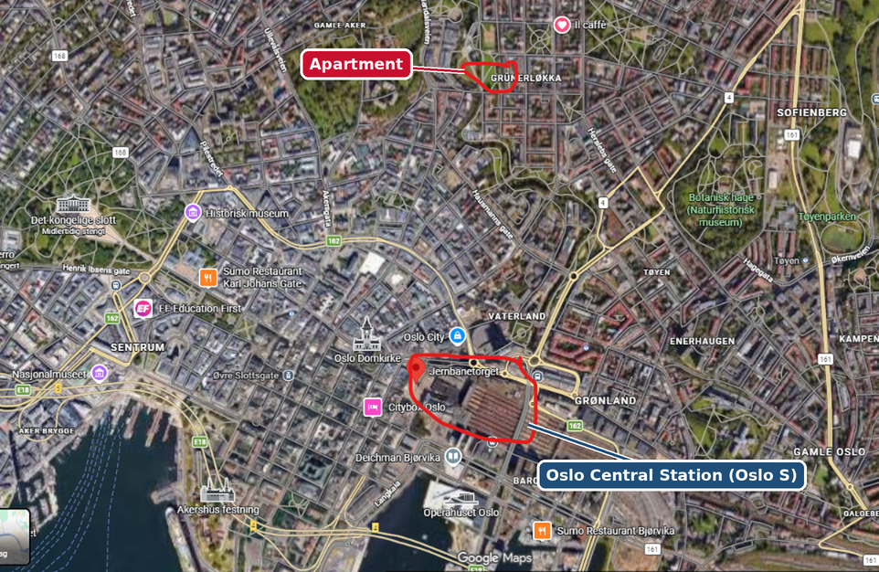
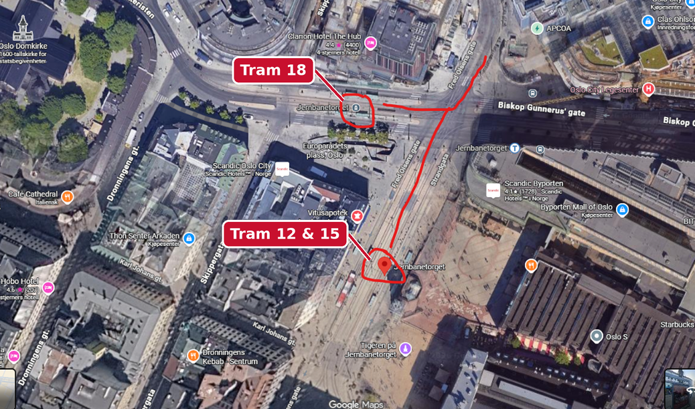
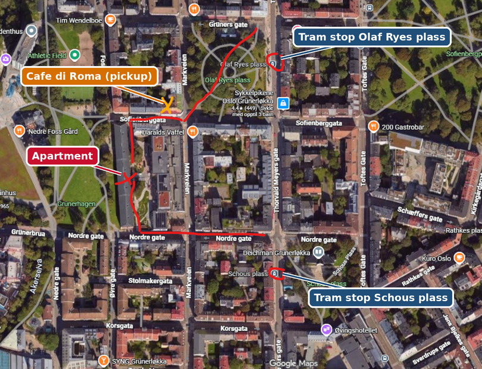
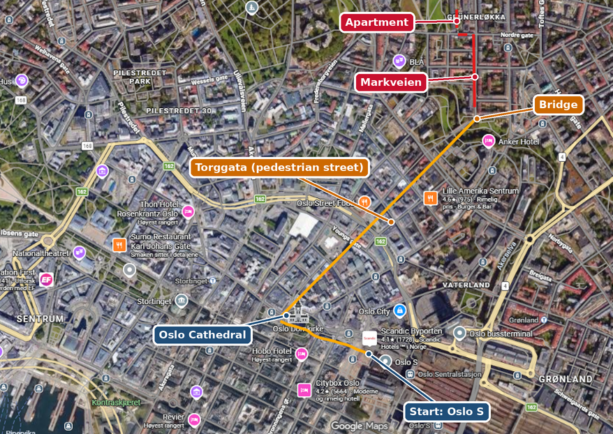
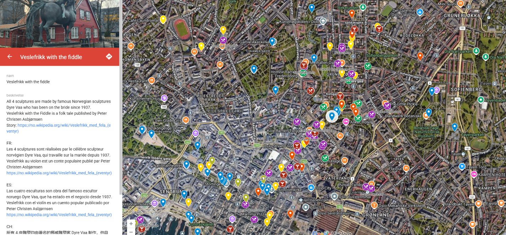

Thanks for booking. Here is everything you need to find the apartment, check in, and enjoy Oslo. Please read it before you travel.
We will normally be there to meet you. If the keys need to be handed over another way, we agree on that case by case. Please send us a message on Airbnb with:

Most guests arrive at Oslo Central Station (Oslo S) or the bus terminal next to it. See the airport tips below if you are flying in.
In front of the Central Station, take tram 12, 15 or 18 to the stop Schous plass or Olaf Ryes plass, and walk 2 minutes from there. When you come out of the main entrance, the trams go from left to right. The ride is 3 stops and about 4 minutes.
Buy your ticket in the Ruter app before you board. If you came on the local train from the airport, your train ticket is already valid on the tram.

From either tram stop it is a short walk. The red lines on the map show both routes.

From Olaf Ryes plass: walk diagonally across the square to Sofienberggata and continue to the apartment. On the way you pass Cafe di Roma, marked in orange. This is our usual meeting and pickup spot, so we may agree to meet you there.
From Schous plass: walk west along Nordre gate, then turn right up to the apartment.
If the weather is good, we recommend walking. Most of the way is pedestrian streets, and the route takes only about 2 minutes longer than the one your GPS suggests, but it is much nicer.
Do not follow the GPS. It suggests worse routes than this one.

Take the local train run by Vy. The ticket costs about half as much as the airport express, and it is also valid on the city's trams, buses and metro for 2.5 hours. Buy it in the Ruter app and get off at Oslo S.
Take the direct bus to Oslo, or take the shuttle bus from the airport to Torp station and the Vy train from there to Oslo S.
On the refrigerator there is a QR code. Scan it for a welcome and instruction video for the apartment.
This custom Google Maps guide marks the places we recommend, each with a note on why it is worth a visit: restaurants, bars, shops loved by locals, and the main sights.
Don't miss Vigeland Park, also called the Sculpture Park. Gustav Vigeland's sculptures fill the whole park, and it is a favourite with locals and visitors alike.
